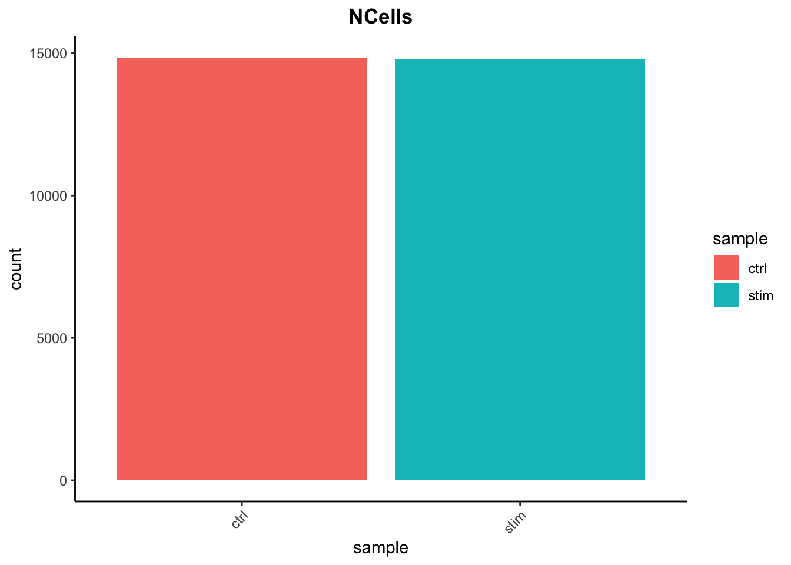
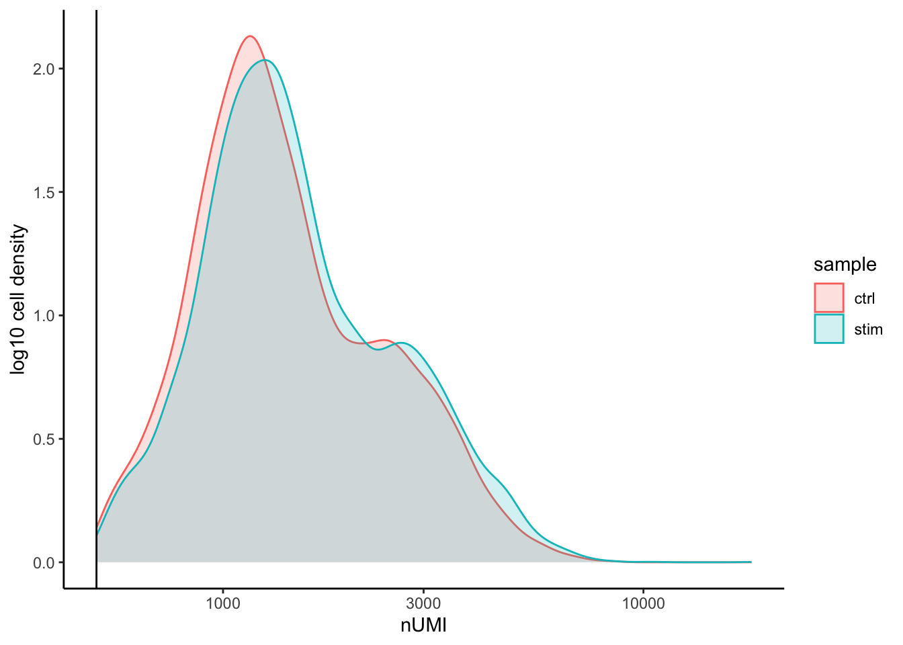
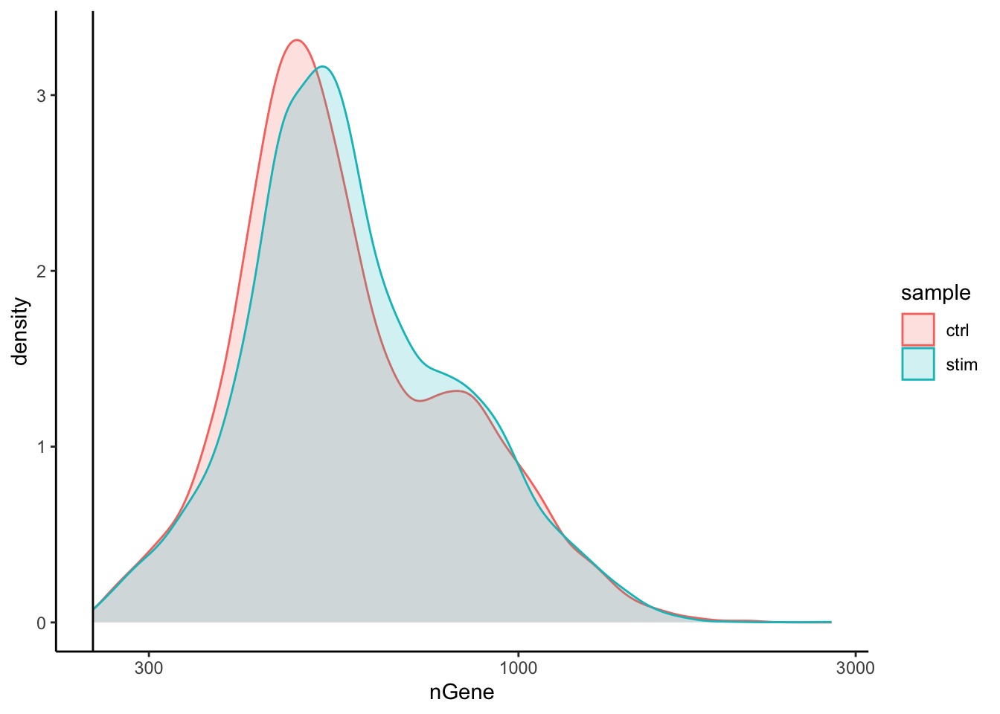
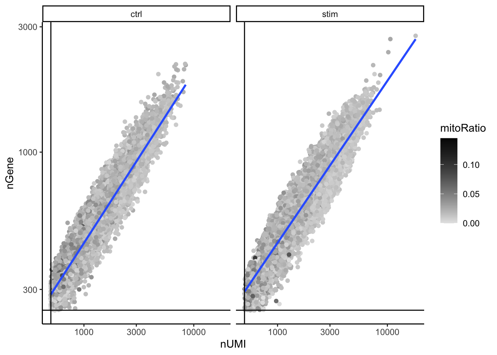
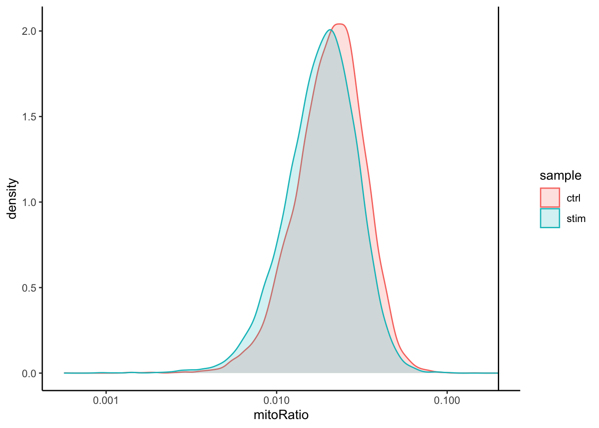
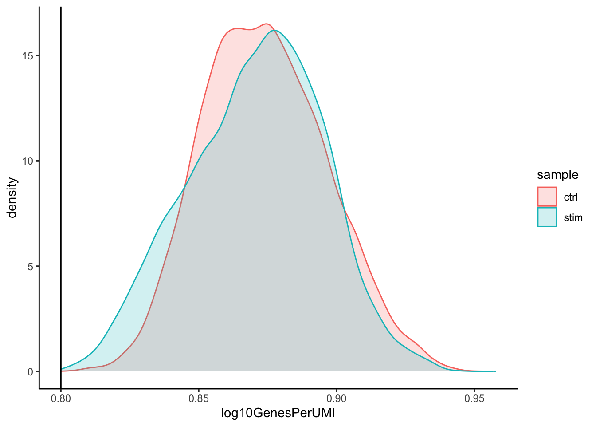

# Save filtered subset to new metadata
metadata_clean <- filtered_seurat@meta.dataAnswer key - Quality Control Analysis
1. Extract the new metadata from the filtered Seurat object using the code provided below:
2. Perform all of the same QC plots using the filtered data.
Cell counts
After filtering, we should not have more cells than we sequenced. Generally we aim to have about the number we sequenced or a bit less.
## Cell counts
metadata_clean %>%
ggplot(aes(x=sample, fill=sample)) +
geom_bar() +
theme_classic() +
theme(axis.text.x = element_text(angle = 45, vjust = 1, hjust=1)) +
theme(plot.title = element_text(hjust=0.5, face="bold")) +
ggtitle("NCells")
UMI counts
The filtering using a threshold of 500 has removed the cells with low numbers of UMIs from the analysis.
# UMI counts
metadata_clean %>%
ggplot(aes(color=sample, x=nUMI, fill= sample)) +
geom_density(alpha = 0.2) +
scale_x_log10() +
theme_classic() +
ylab("log10 cell density") +
geom_vline(xintercept = 500)
Genes detected
# Genes detected
metadata_clean %>%
ggplot(aes(color=sample, x=nGene, fill= sample)) +
geom_density(alpha = 0.2) +
theme_classic() +
scale_x_log10() +
geom_vline(xintercept = 250)
UMIs vs genes
# UMIs vs genes
metadata_clean %>%
ggplot(aes(x=nUMI, y=nGene, color=mitoRatio)) +
geom_point() +
scale_colour_gradient(low = "gray90", high = "black") +
stat_smooth(method=lm) +
scale_x_log10() +
scale_y_log10() +
theme_classic() +
geom_vline(xintercept = 500) +
geom_hline(yintercept = 250) +
facet_wrap(~sample)
Mitochondrial counts ratio
# Mitochondrial counts ratio
metadata_clean %>%
ggplot(aes(color=sample, x=mitoRatio, fill=sample)) +
geom_density(alpha = 0.2) +
scale_x_log10() +
theme_classic() +
geom_vline(xintercept = 0.2)
Novelty
# Novelty
metadata_clean %>%
ggplot(aes(x=log10GenesPerUMI, color = sample, fill=sample)) +
geom_density(alpha = 0.2) +
theme_classic() +
geom_vline(xintercept = 0.8)
3. Report the number of cells left for each sample, and comment on whether the number of cells removed is high or low. Can you give reasons why this number is still not ~12K (which is how many cells were loaded for the experiment)?
There are just under 15K cells left for both the control and stim cells. The number of cells removed is reasonably low.
While it would be ideal to have 12K cells, we do not expect that due to the lower capture efficiency (i.e. the number of actual cells encapsulated within droplets containing barcodes) of these technologies. If we still see higher than expected numbers of cells after filtering, this means we could afford to filter more stringently (but we don’t necessarily have to).
4. After filtering for nGene per cell, you should still observe a small shoulder to the right of the main peak. What might this shoulder represent?
This peak could represent a biologically distinct population of cells. It could be a set a of cells that share some properties and as a consequence exhibit more diversity in its transcriptome (with the larger number of genes detected).
5. When plotting the nGene against nUMI do you observe any data points in the bottom right quadrant of the plot? What can you say about these cells that have been removed?
The cells that were removed were those with high nUMI but low numbers of genes detected. These cells had many captured transcripts but represent only a small number of genes. These low complexity cells could represent a specific cell type (i.e. red blood cells which lack a typical transcriptome), or could be due to some other strange artifact or contamination.